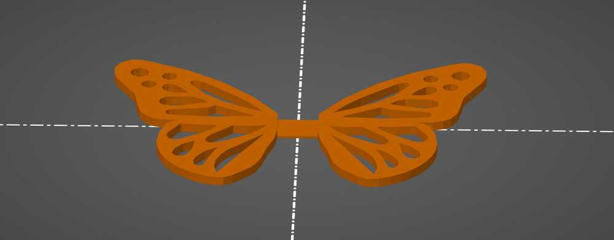
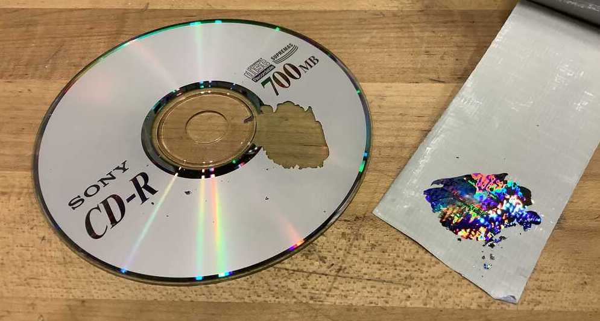
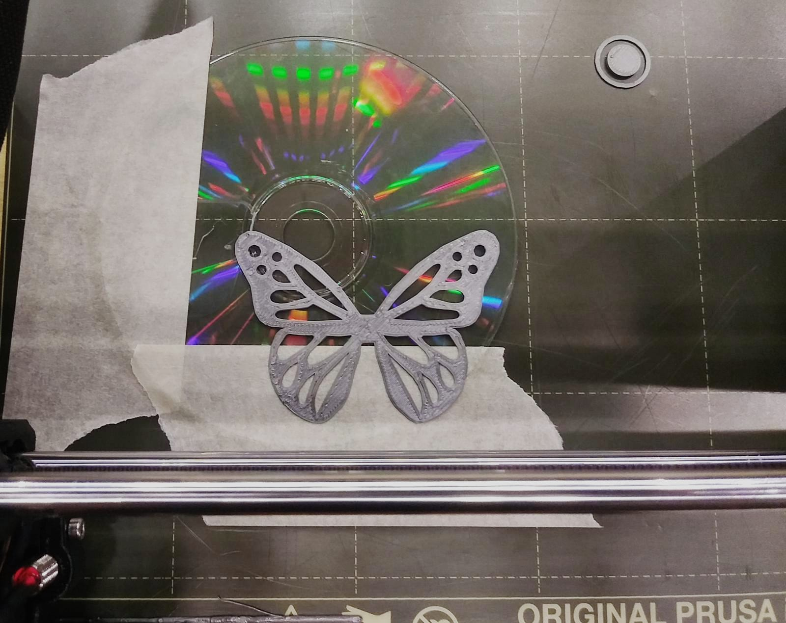

Assignments
1. 3D design
During training on the Prusa, Anthony mentioned that the EECS section machine comes with different build plates for use with various materials. The side effect is that 3D prints get embossed with the texture of the build plate. This got me thinking that we might be able to give 3D prints interesting optical properties this way.
I vaguely recall seen a documentary about how the brilliant blue on the top surface of a morpho butterfly’s wing is not due to any naturally occuring pigment (there is none), but rather microscopic holes that bend light in a particular way, and that scientists have been trying to recreate this effect using nanometer holes, such as on Australian notes.

I also remember this Youtube video creating holographic chocolates, and was curious if 3D prints might have the same behavior, being that both materials are molten as they touch the “mold” surface.
I wanted to 3D print some butterflies and test my theory. Sadly however I was devoid of diffraction grating sheets, and went “dumpster diving” through unwanted things from the lab. There, I chanced upon a small stack of shiny holographic CDs.
Although a CD is not really a diffraction grating, after all the light bounces off of the CD, it does not pass through it, the CD acts like a diffraction grating because the reflected light undergoes constructive and destructive interference due to the special geometry of the CD’s bottom surface.
I decided to try 3D printing on a CD.
My first step was to design a butterfly. I cadded the outline and extruded it. Since the butterfly needs to be printed upside down laying flush on a surface, I designed a living hinge that could be used to bend the butterfly after printing.

The first challenge I ran into was that the Prusa is magnetically (and automatically) calibrated before each print, which creates a challenge for printing on an unusual surface. To circumvent this problem, I added a 1.2mm nub in my design that was connected to the build plate, and translated the butterfly upwards by the same 1.2mm (the thickness of the CD).
I found that the best way to remove the paint from the CD is to scratch it at several spots with a blade, and then use duck tape to rip out chunks at a time. I then wipe it with a microfiber cloth as finger prints will transfer to 3D prints.

Albeit with some alignment issues, my first test translating holo from a CD to a 3D print worked!

The microscopes available do not have the resolution to see anything interesting on the prints, but Zach mentioned that we could try with something more powerful in the future.
Emboldened by this trial, I decided to make moar CD butterflies.
I wanted my butterflies to be black. Unfortunately, the black filament was ABS and had a much higher print temperature (100°C) than the PLA (60°C), and so entirely fused to the CD.
Undefeated, I acquired some diffraction grating sheets from Amazon and continued my trial with different filament (left: black, right: translucent).
As suspected, the patterns on black material appeared best on camera, although the translucent butterfly is pretty cool in person too.
I also experimented with incorporating diffraction grating sheet and tracing paper as one of the layers during 3D printing. This also turned out pretty cool!
I learned that while both CDs and diffraction grating sheets work, the CD produces smoother results and more linear rainbows. The diffraction grating bubbles up during printing, resulting in more wacky patterns.
I wanted to print butterflies on beautiful flowy tulle, but short of finding some I mounted them on the next best option - chicken wire!
A compressed and sped up version of the video can be found on GitLab here.
The butterflies have a nub on the bottom for easy mounting, but I wasn’t able to 3D print a press-fit stud that worked, so I used some hot glue (which interestingly made the butterflies “flap” when applied to the joint).
I attempted to 3D print my own defeXtile, but the print took too long. Jack very kindly donated an old test, which I was able to 3D print directly on top of my pausing the print midway, adding the material, and then continuing to print on top.
Interactive 3D model viewer (zoom, drag, and pan):
I am really excited about this method. The 3D prints came out very smooth, and we can also use layering to make it smooth on opposing sides. I am curious to try more detailed holographic patterns as well, such as:

2. 3D scan
For my scan, I scanned a pusheen stuffed toy and made a site to view it in AR and scribble around it: olivia-s.glitch.me.
3. 3D printer characterization
The EECS section characterized Prusa and Sindoh machines. The photos are available in our group folder. More details can be found on our group page, and a summary of my learning is as follows:
Overhang
Both printers could print at 40ish degrees with no issues. Angles smaller than that risk instability. The threshold for unsupported overhangs on both printers was 0.1mm.
Support clearance
A gap of 0.6 was most ideal for support clearance.
Unsupported bridging
The PLA material started to sag at around 15mm.
Wall thickness and dimensions
The minimum print resolution was 0.5mm. The cubes were off by up to 0.02mm for a single solid wall.
Anisotropy
Anisotropy was observed on both printers, making prints susceptible to shearing if filament is placed in a regular way along stress lines.